Fabricantes de maquetas profesionales para proyectos de arquitectura, naval, petróleo y gas, industria e ingeniería
Precisión de ingeniería para presentaciones de proyectos de alto impacto.
Transformamos complejos planos arquitectónicos, planes directores de ciudades y distritos, diseños de superyates e infraestructuras energéticas offshore en maquetas físicas impecables y de alta precisión.
- Respuesta rápida en 24 horas laborables.
- Propuestas técnicas y económicas detalladas en 48 horas laborables.
La confianza de empresas líderes en todo el mundo
Una maqueta convierte un proyecto complejo en algo que las personas pueden ver, entender y recordar.
Con más de 30 años de excelencia en fabricación, dos centros de producción que suman más de 12.000 m² y un equipo de más de 250 maestros artesanos e ingenieros CAD, TNBuilt West fabrica maquetas profesionales a medida, de alta precisión y calidad de museo, a partir de planos CAD, archivos 3D, renders e información técnica facilitados por nuestros clientes, dando vida a proyectos complejos.
Transformamos planos digitales en impresionantes piezas físicas y tangibles para ferias, exposiciones, museos, entornos corporativos, ventas a inversores y presentaciones ejecutivas.
Trabajamos en arquitectura, sector inmobiliario, naval, petróleo y gas offshore, instalaciones industriales, planificación urbanística e ingeniería. Cada maqueta se desarrolla según la geometría del proyecto, la escala requerida, los objetivos de presentación y las especificaciones técnicas.
¿Por qué presentar su proyectocon una maquetafísica?
Una maqueta permite que inversores, compradores y socios comprendan un proyecto entero en segundos: su dimensión, su implantación y su calidad. En una sala de ventas, un stand de feria, una sala de juntas o un museo, una maqueta física genera una confianza que los planos y los renders no consiguen.
Presente
Muestre el proyecto en su conjunto.
Explique
Haga que los proyectos complejos sean más fáciles de entender.
Impresione
Haga que su proyecto sea inolvidable para cualquier público.
Valorice
Presente el proyecto con la calidad que merece.
¿Necesita presentar un proyecto a clientes, inversores o socios?
Una maqueta hace que sea más fácil visualizar, entender y presentar.
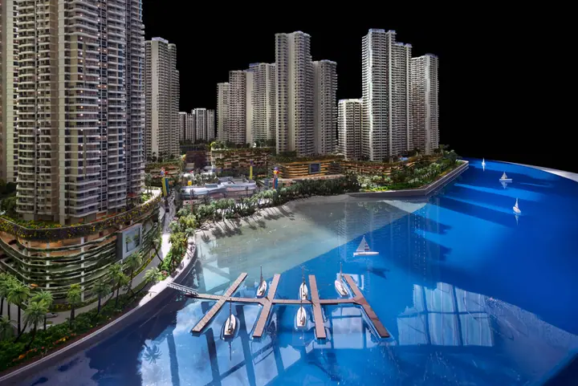
Promociones inmobiliarias
Presente el proyecto antes de que esté construido.
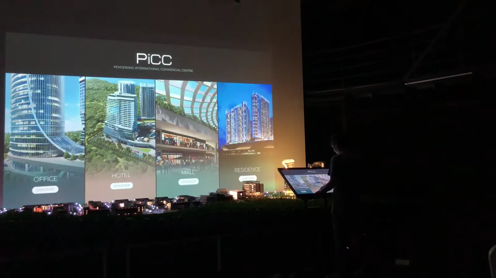
Ferias y exposiciones
Destaque su proyecto en un entorno competitivo.
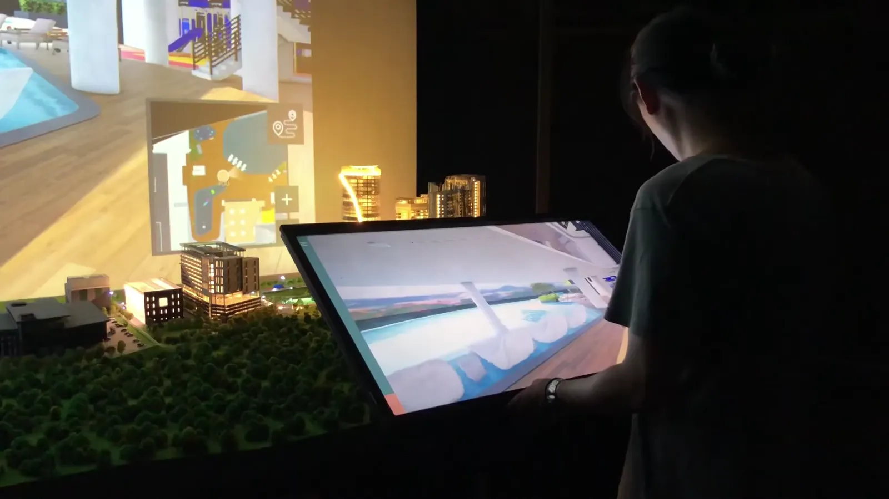
Presentaciones comerciales
Ayude a clientes e inversores a entender rápidamente la propuesta.

Maquetas Mecánicas y Técnicas en Corte
Convierta planos e información compleja en una representación física clara.
Su proyecto es extraordinario. La presentación también debe serlo.
Una maqueta a medida permite a clientes, inversores y socios apreciar de verdad la dimensión, el detalle y el valor de su visión.
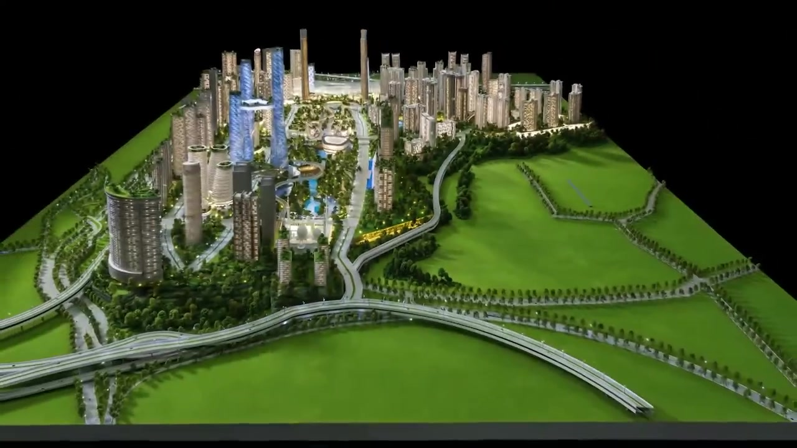
Vea cómo damos vida a los proyectos.Ver el vídeo · 3:05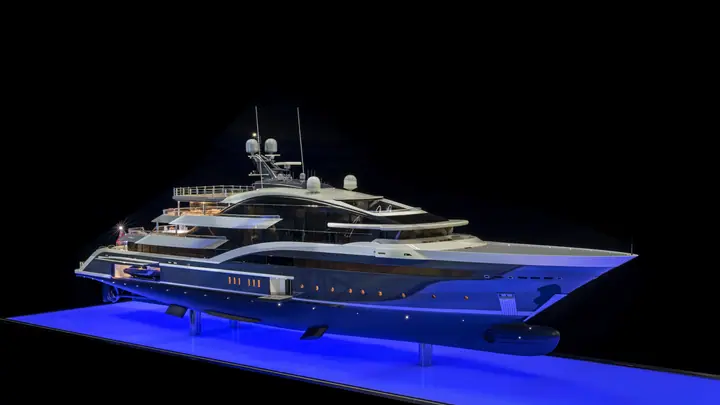
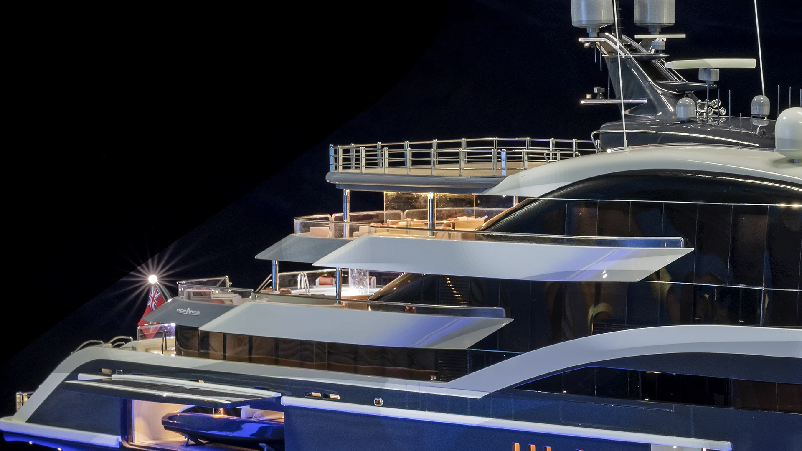
Una reproducción fiel de su proyecto, a escala.
Cada maqueta se desarrolla a partir de los planos y archivos técnicos del proyecto para reproducir formas, materiales, colores y detalles con gran precisión.
Precisión en cada detalle.
Del plano técnico al acabado final.
De yates a ciudades enteras.
Experiencia probada en maquetas de cualquier tamaño, sector o complejidad.
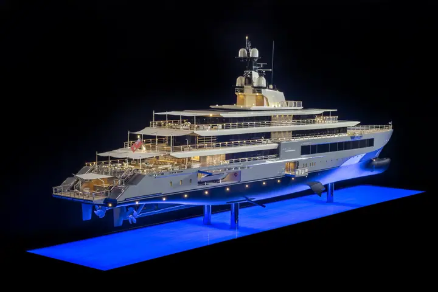
Naval
Yates, buques y embarcaciones
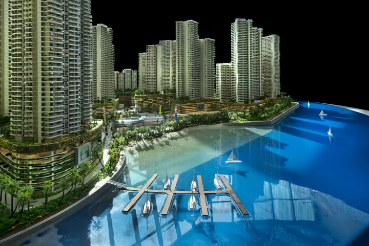
Arquitectura
Edificios, promociones y masterplans
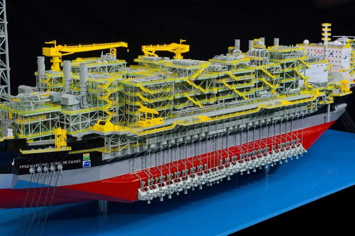
Offshore Petróleo y Gas
Plataformas, equipos e instalaciones

Planeamiento Urbano
Ciudades, puertos e infraestructuras
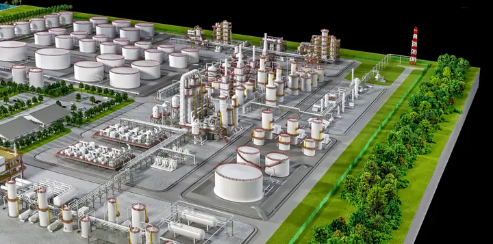
Industria
Refinerías, plantas y estaciones de tratamiento
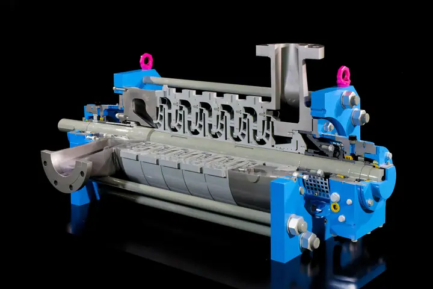
Maquetas Mecánicas y en Corte
Turbinas, Bombas, Motores, Transmisiones y Equipos
Más de 30 años de experiencia produciendo maquetas para proyectos en todo el mundo.
TNBuilt West está especializada en la fabricación de maquetas profesionales a medida, con miles de proyectos realizados en los sectores de arquitectura, industria, naval, energía e inmobiliario.
años de experiencia

de maquetas producidas
producción y entrega internacional
maquetistas e ingenieros especializados
en dos fábricas
hasta su propuesta técnica y económica
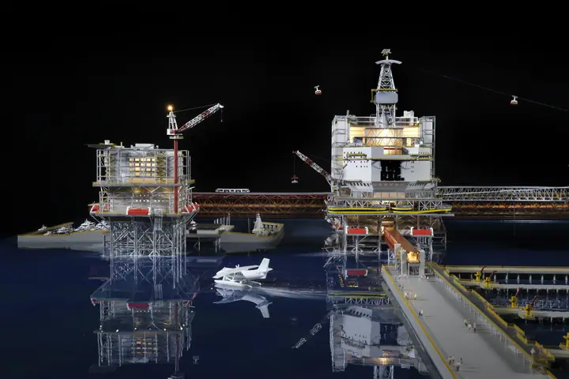
semanas del pedido a la maqueta terminada
Precisión de ingeniería para sectores diversos en todo el mundo
Una maqueta física convierte planos complejos en un lenguaje visual inmediato y universal. Tanto si presenta un plan director frente al mar a urbanistas como si propone un nuevo concepto de superyate a compradores privados, nuestras maquetas a medida ofrecen un detalle sin concesiones y una claridad espacial absoluta.
Maquetas de arquitectura y planificación urbanística
- Aplicaciones
- Torres residenciales, villas de lujo, distritos empresariales, complejos turísticos y desarrollos urbanos frente al mar.
- Características principales
- Curvas de nivel topográficas, paisajismo en resina a medida, iluminación arquitectónica interior, acabados de fachada realistas, mobiliario de cubierta suelto y pantallas táctiles interactivas.
Maquetas navales y marítimas
- Aplicaciones
- Superyates de lujo, buques de pasaje comerciales, cruceros, buques de defensa naval y embarcaciones de apoyo offshore.
- Características principales
- Perfilado hidrodinámico del casco, mobiliario de cubierta a medida, acristalamiento tintado de privacidad, barandillas de latón grabado, pedestales a medida de acero inoxidable/aluminio cepillado e iluminación LED interior de cubierta.
Petróleo y gas offshore, energía e infraestructuras industriales
- Aplicaciones
- Buques FPSO, plataformas de perforación offshore, refinerías de petróleo, plantas de gas LNG e instalaciones de tratamiento de agua.
- Características principales
- Sistemas de tuberías con código de colores, rejillas de pasarela de cobre grabado al ácido, estructuras reticuladas de acero, iluminación dinámica y secciones mecánicas en corte.
Maquetas mecánicas y técnicas en sección
- Aplicaciones
- Turbinas de gas, bombas industriales, robótica submarina ROV y vehículos sísmicos terrestres.
- Características principales
- Mecanismos internos motorizados, ventanas de corte que revelan la dinámica de fluidos o los engranajes internos, y componentes internos de aluminio/cobre mecanizados con precisión.
Infraestructura de primer nivel: dos plantas, más de 12.000 m² de capacidad y más de 250 artesanos
TNBuilt West combina la fabricación automatizada de última generación con el acabado artesanal tradicional. Con dos avanzadas instalaciones de producción que suman más de 12.000 metros cuadrados en Kuala Lumpur (Malasia), nuestro equipo de más de 250 diseñadores CAD, operarios CNC, maquetistas e ingenieros eléctricos especializados nos permite abordar grandes planes directores y pedidos de gran volumen con los plazos de entrega más rápidos del sector.
| Parámetro técnico | Especificación de fabricación |
|---|---|
| Superficie de las instalaciones | Dos centros de fabricación de más de 12.000 m² |
| Plantilla | Más de 250 maquetistas, ingenieros CAD y técnicos en plantilla |
| Tecnologías principales | Fresado CNC multieje, impresión 3D SLA/SLS, corte láser de CO2, estaciones de trabajo CAD/CAM |
| Gama de materiales | Acrílicos de calidad óptica, PVC resistente, ABS, láminas de cobre grabadas al ácido, contrachapado, aluminio, acero inoxidable |
| Opciones de iluminación | Circuitos LED a medida de una o varias zonas, iluminación interior cálida, iluminación de acento RGB con pulsador en la base o mando a distancia |
| Estándar de embalaje | Cajas de transporte de aluminio de alta resistencia diseñadas a medida, revestimiento de espuma amortiguadora e indicadores de impacto de fuerza G |
| Alcance global | Envío aéreo puerta a puerta con soporte completo de documentación de exportación y aduanas |
Para quién trabajamos
Astilleros y diseñadores de yates
Maquetas comerciales y de exposición de superyates, cruceros y embarcaciones de trabajo.
Promotores inmobiliarios
Torres, resorts y planes directores para salas de ventas y lanzamientos.
Empresas de petróleo, gas y energía
FPSO, plataformas, plantas y equipos.
Gobiernos y organizadores de EXPO
Maquetas de ciudades, puertos e infraestructuras.
Fabricantes industriales y de automoción
Productos, mecanismos y maquetas en sección para ferias.
Museos y centros de visitantes
Dioramas y exposiciones interactivas.
TNBuilt West en cifras
| Fundación | 1990 |
|---|---|
| Sede / fábricas | Kuala Lumpur, Malasia |
| Capacidad de producción | Dos plantas, 12.000 m², más de 250 empleados |
| Escalas habituales | La mayoría de los proyectos, de 1:50 a 1:200. Realizamos cualquier tamaño y cualquier escala. |
| Plazo habitual | 4–10 semanas por maqueta; entregas por lotes en pedidos de varias maquetas |
| Plazo de propuesta | Respuesta en 24 h, propuesta formal en 48 h |
| Entrega | Transporte aéreo a todo el mundo, normalmente en 7–11 días. Envío totalmente asegurado. |
| Garantía | 1 año sobre piezas o mano de obra defectuosas |
¿Hasta qué tamaño podemos construir?
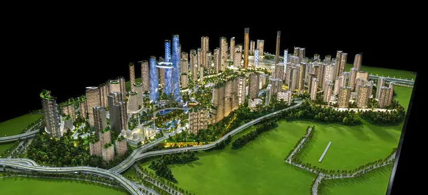
18 × 12 metros.
Una de las mayores maquetas urbanísticas que hemos producido, montada in situ.
Su proyecto no tiene que caber en un catálogo.
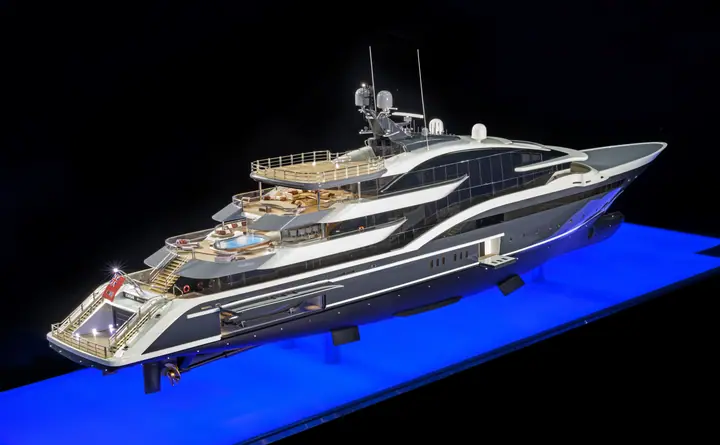
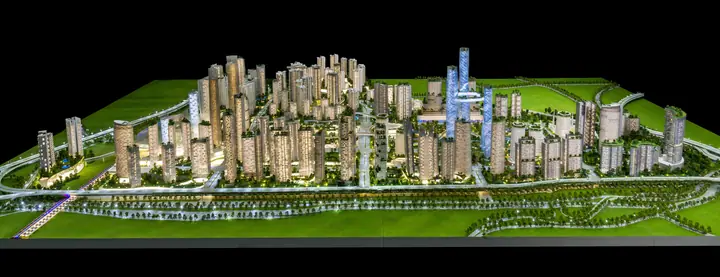
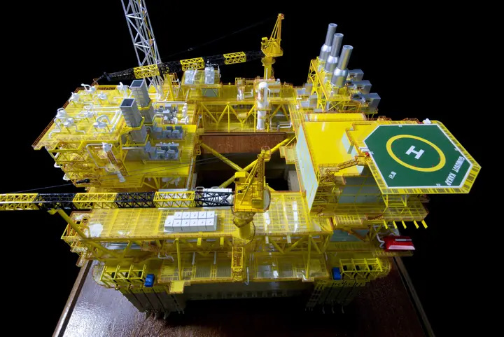
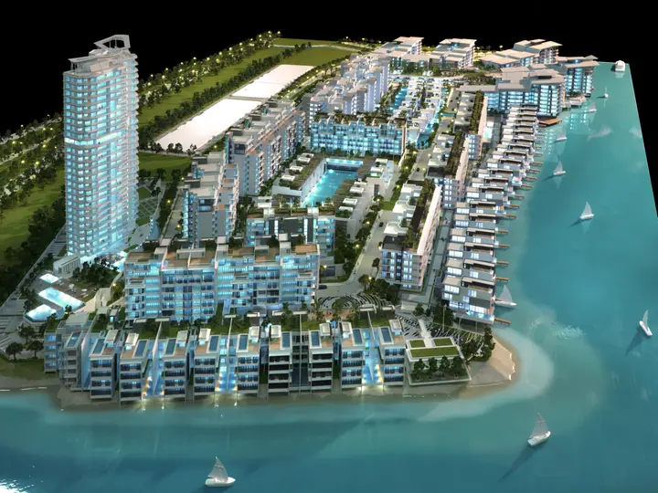
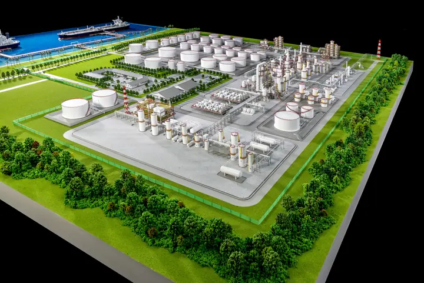

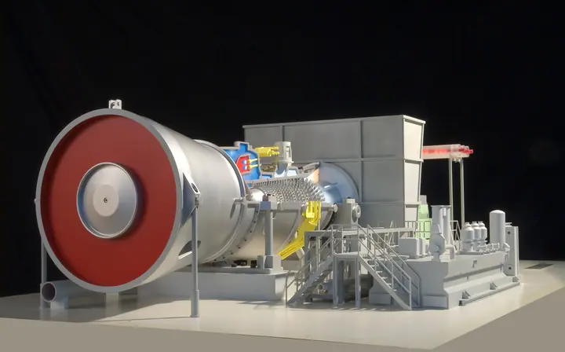
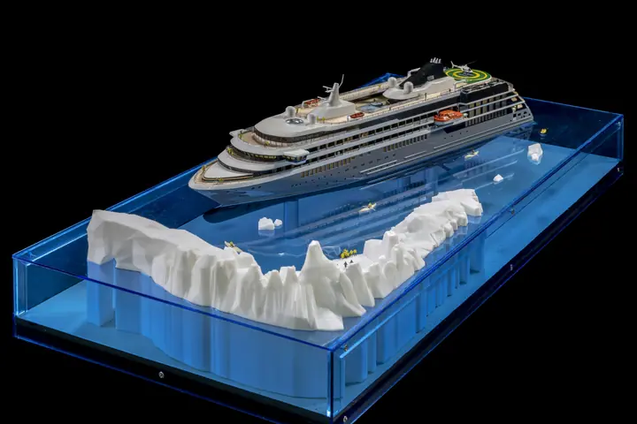
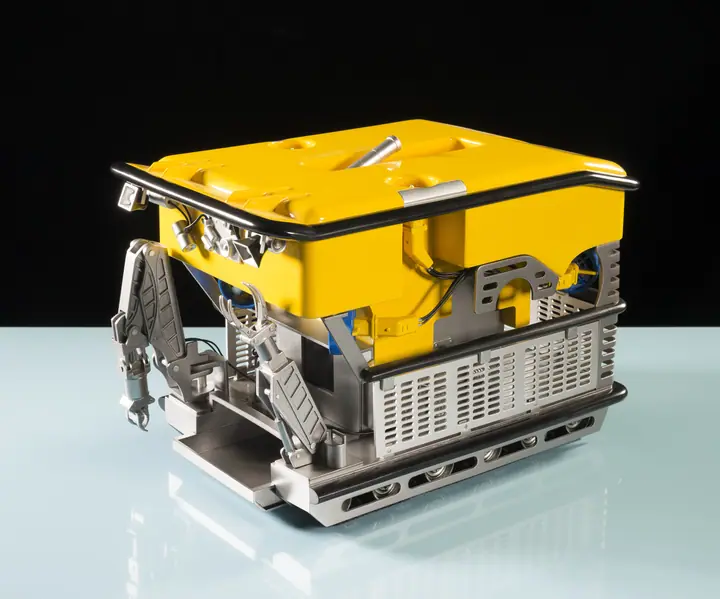
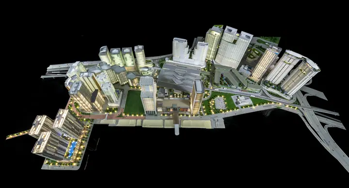
¿Podemos construir el suyo?
Vea algunos de los proyectos que hemos producido.
Maquetas desarrolladas para clientes y proyectos de distintos sectores en todo el mundo.

“DAR” (now “Luna”)
Superyate de OCEANCO · Naval · Escala 1:50
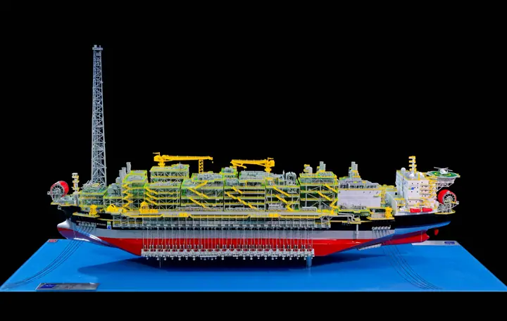
“Marechal Duque de Caxias”
FPSO MERO3 de MISC Berhad · Offshore Petróleo y Gas · Escala 1:250
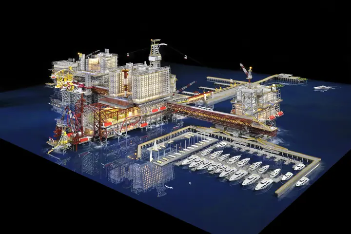
THE RIG
Resort offshore · Arquitectura · Escala 1:400

Battersea Power Station
Residencial · Arquitectura
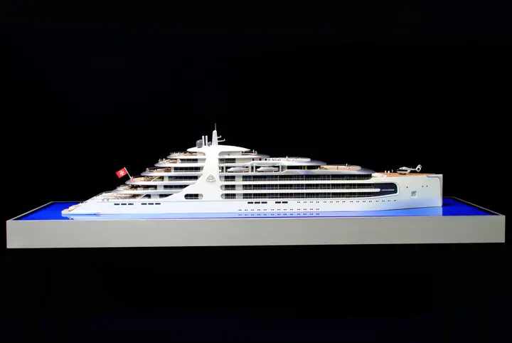
“Beyond Horizons”
Superyate de MAYBACH · Naval · Escala 1:100
¿Listo para dar vida a su proyecto?
Envíenos los planos de disposición general y los requisitos del proyecto. Nuestro equipo analizará las especificaciones y entregará una propuesta técnica y económica completa en 48 horas.
- Respuesta rápida en 24 horas laborables.
- Propuestas técnicas y económicas detalladas en 48 horas laborables.
De los planos CAD a la maqueta terminada: nuestro proceso paso a paso
Nuestro proceso de fabricación combina ingeniería, fabricación digital y maquetismo especializado. La información CAD y 3D del cliente se convierte en datos de fabricación y, a continuación, en componentes producidos individualmente, que nuestro equipo de producción monta y acaba.
- 01
Revisión del proyecto
Revisamos la información del proyecto, la escala requerida, las dimensiones, los requisitos de presentación, el plazo y el destino.
- 02
Preparación CAD/CAM
La información de ingeniería y diseño 3D se convierte en archivos de fabricación adecuados para nuestros equipos de producción.
- 03
Fabricación de componentes
Los componentes se fabrican individualmente mediante los procesos adecuados, como el mecanizado CNC, el corte láser y la impresión 3D.
- 04
Pintura y acabado
Los componentes se pintan y acaban según las gamas de color, las referencias y los requisitos de presentación del proyecto.
- 05
Montaje manual
Los componentes se montan a mano para completar la maqueta. Los circuitos eléctricos, la iluminación LED y otras funciones se integran cuando es necesario.
- 06
Control de calidad
La maqueta terminada se inspecciona y prueba antes del embalaje. Durante toda la producción podemos compartir fotografías y vídeos de los avances, para que el cliente siga el proyecto a distancia.
- 07
Aprobación final y entrega
La evaluación final de calidad puede realizarse a distancia o en nuestras instalaciones de fabricación antes del embalaje protector profesional y el envío internacional.
Propuesta en 48h.
Tras recibir la información necesaria del proyecto.
Materiales, tecnología y entrega global
Materiales
- Acrílico
- PVC
- ABS
- Cobre
- Contrachapado
- Aluminio
- Acero inoxidable
- Madera
Tecnología de fabricación
- Estaciones de trabajo CAD/CAM
- Mecanizado CNC
- Corte láser CO₂
- Impresión 3D
- Fabricación de componentes de alta precisión
- Sistemas de pintura profesional
- Desarrollo de circuitos eléctricos/LED a medida
Envío global seguro y embalaje de transporte de alta resistencia
- Cajas de transporte de aluminio con revestimiento a medida
- Logística integral global y gestión aduanera a cargo de operadores internacionales de referencia como DHL o UPS
- Protección en tránsito e indicadores de impacto de fuerza G integrados
Confidencialidad
- Información técnica protegida
Transparencia total, de principio a fin.
Siga la producción de su maqueta a través de:
Hecha en Kuala Lumpur.
Seguida por usted, esté donde esté.
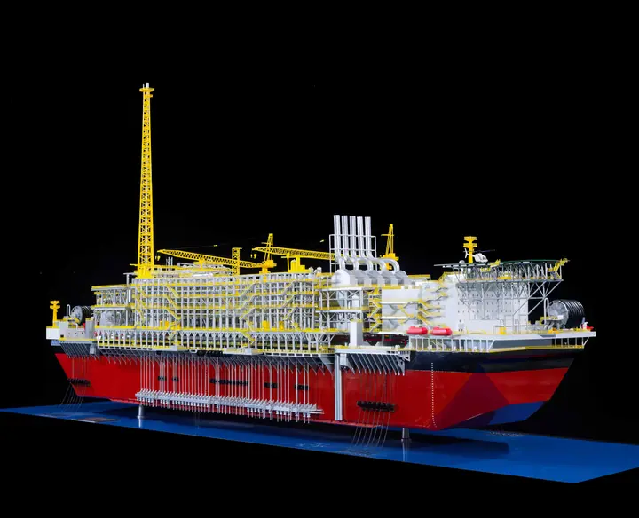
Casco y estructura principal terminados. Primeras fotos adjuntas.
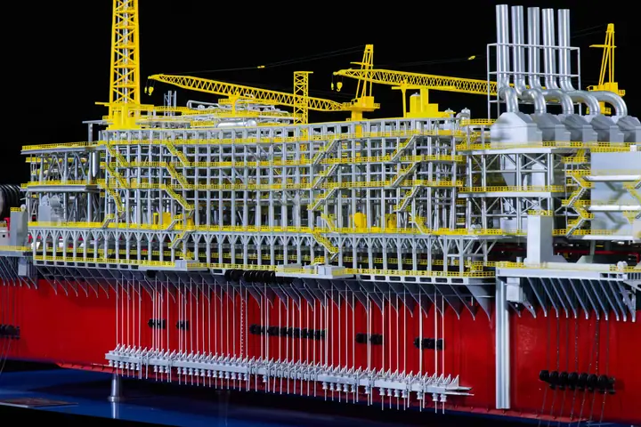
Módulos del topside instalados ✓
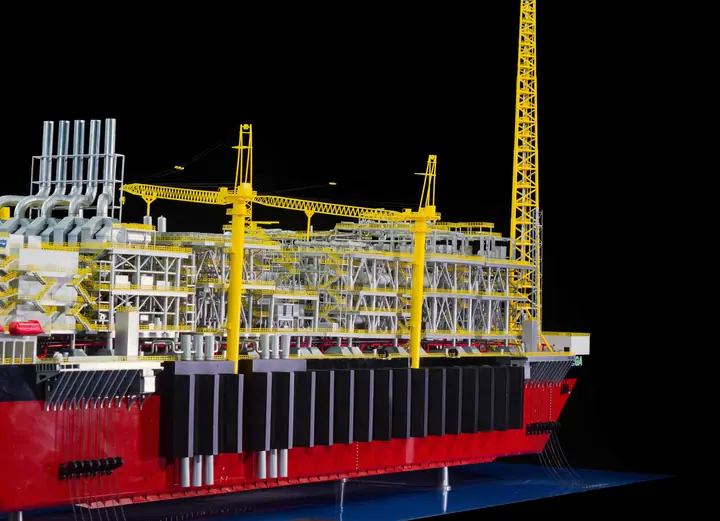
▶ 0:42Pintura terminada. Vídeo de la prueba de iluminación en camino.
Su maqueta está lista para la aprobación final.
Perfecta. ¡Aprobada! 👏
La mejor parte es ver su reacción.
Hemos recibido la maqueta (bomba) en buen estado. ¡Un trabajo verdaderamente impresionante! Estamos muy contentos con el resultado. ¡Muchas gracias!
Su rápida capacidad de fabricación fue decisiva para tener la maqueta del MMEGA a tiempo para la OTC 2023.
La 2.ª maqueta [del superyate] se vio y se expuso por primera vez ayer e impresionó a todos los visitantes. ¡Bien hecho, TNB!
La maqueta de la draga de succión es realmente impresionante.
¡¡¡Impecable!!! Exactamente lo que queríamos.
La maqueta está en la entrada principal de nuestra oficina. Llama la atención de todos.
Maquetas increíbles y entregadas a tiempo, como estaba previsto.
Perfecto. Todo el mundo queda impresionado con el trabajo.
¡La maqueta queda genial! Estoy deseando verla en la feria.
Preguntas frecuentes
¿Cuánto cuesta una maqueta?
El coste depende del tamaño de la maqueta, del número de unidades del mismo diseño, de la complejidad del proyecto original, del plazo y lugar de entrega y de requisitos especiales como mecanismos, movimiento, iluminación LED o materiales especiales. Por eso cada solicitud recibe una propuesta técnica y económica a medida, gratuita, en 48 horas.
¿Cuánto se tarda en fabricar una maqueta?
El 99% de nuestras maquetas se producen en 4 a 10 semanas, según el tamaño, la complejidad y el número de maquetas. Donde otros tardan meses, nosotros tardamos semanas.
¿Cuánto tarda el envío?
Exportamos a todo el mundo vía DHL o UPS cargo, en cajas de protección a medida. El 99% de nuestras maquetas se entregan en menos de una semana, incluido el despacho de aduanas.
¿Qué materiales utilizan?
Principalmente acrílico de varios espesores, PVC duradero, ABS, cobre grabado al ácido, contrachapado, aluminio y acero, combinados con impresión en resina de alta definición y pinturas de grado automotriz.
¿Cuál es la maqueta más grande que pueden fabricar?
Fabricamos maquetas de cualquier tipo y tamaño. Hemos producido maquetas de desarrollos urbanos de 18 × 12 metros, incluido el montaje en el lugar de exposición.
¿Se mantiene confidencial la información de mi proyecto?
Por supuesto. Trabajamos con estrictos protocolos NDA y total discreción sobre toda la información confidencial, diseños de ingeniería y especificaciones recibidas de nuestros clientes, sobre todo en proyectos no lanzados.
¿Cómo sigo la producción de mi maqueta?
Cada proyecto comienza con un plan de ejecución detallado acordado con usted. Durante la producción compartimos actualizaciones, fotos y vídeos de cada fase. El control de calidad final se hace en persona en fábrica o en remoto mediante imágenes detalladas.
Empiece ya su maqueta.
Envíenos su proyecto y prepararemos una propuesta técnica y económica.
- Respuesta rápida en 24 horas laborables.
- Propuestas técnicas y económicas detalladas en 48 horas laborables.